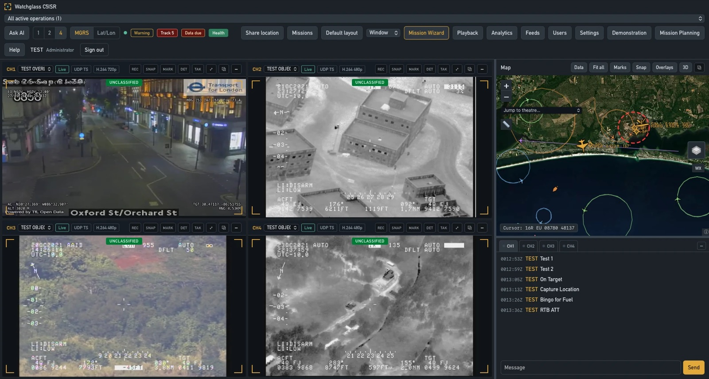

The four modes
One platform, four jobs.
Mission Planning
Deliberate planning from receipt of mission to a complete order. Build the scheme of maneuver on the map, generate a five-paragraph OPORD and CONOP, get a terrain-driven course-of-action recommendation, wargame it, then rehearse it in 3D before anyone steps off.


Operations
Run the live mission. Promote the approved order in one step and the graphics, collection plan, airspace, and command-and-signal go live on a shared common operational picture, with full-motion video, cueing, analytics, and the AI assistant on the same screen.
Training
A hands-on, scored mirror of Operations, isolated from real data. Analysts work full scenarios through Learn, See, Apply, and Perform stages, earn currency, and build proficiency across every function - with graduated hints and worked examples.


Demonstration
A guided, safe sandbox that shows the whole capability on real example data - every tour stop puts the actual thing on screen. The fastest way to see what Watchglass does end to end, from planning through execution to after-action.